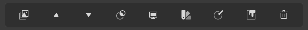
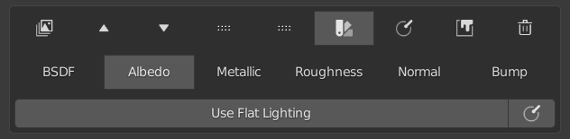
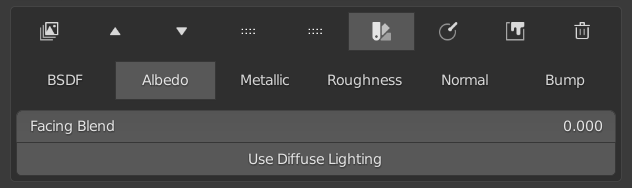

Preview Master Channels#
Preview Panel#
It is possible to isolate all the layers of any given channel and preview them.

When the panel is expanded, you will gain access to operators that allow you to preview each individual channel using flat lighting. The use of flat lighting means that you will see the maps as they will be when exported, therefore allowing you to tweak the settings of the different layers of the isolated channel accordingly.
Albedo Preview#
The albedo channel has extra functionality that allows you to preview using either diffuse lighting or flat lighting.
Albedo Diffuse#
When using diffuse lighting, you will see all the shadows cast but have no specular reflections.

Albedo Flat#
When using flat lighting, you will have an accurate visualization of what the albedo channel looks like.
If there are no other layers painted it may be hard to visualize the different parts of your object. For this reason, you can use facing to change the lighting and make it easier to see them.
